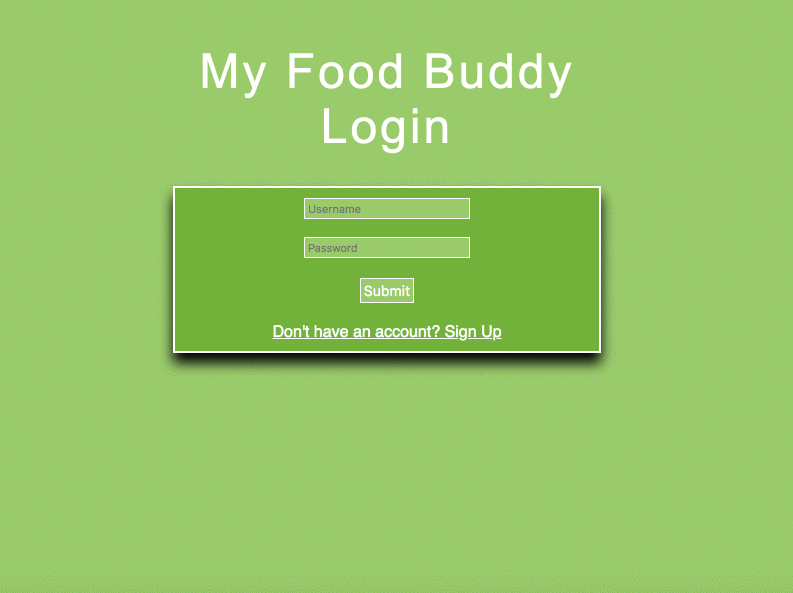
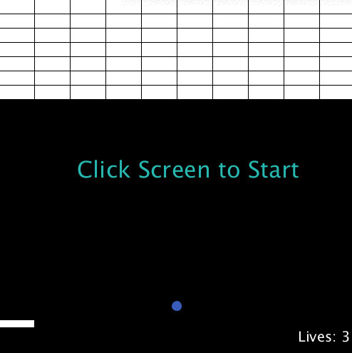

Web DevelopmentBLUE TRAIL REALTY LLC. It is crucial that twenty-first century companies establish a strong internet presence and do so with
their client base in mind.
|
|
MY FOOD BUDDY Calorie counting can often be monotonous and discouraging. To remedy this sideaffect of typical
calorie counting applications, a team of myself and four other developers created My Food Buddy
to gamify the process of staying healthy.
|
 |
PROCESSING JSATARI BREAKOUT Processing JS is a "Javascript port of Processing" which caters to sleek visualisations.
|
 |